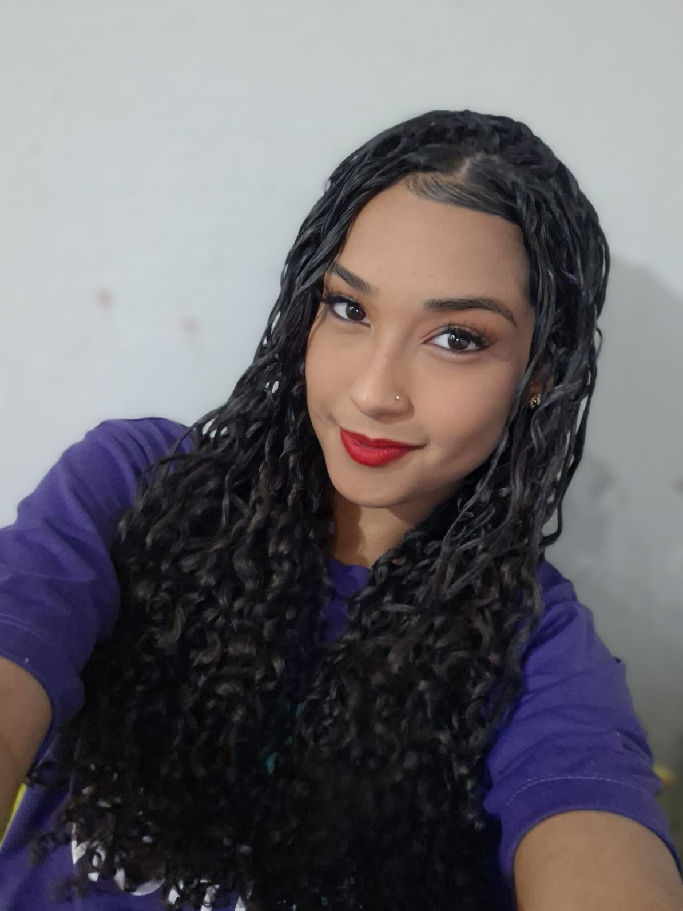

Olá,me chamo Thalita Vieira
Eu moro em São Miguel do Tapuio e estudo no CETI Dona Rosaura.Tenho 16 anos e gosto bastante do meu curso de Desenvolvimento de Sistema.
Autor:Thalita
Olá! Meu nome é Thalita,atualmente estou na 2º série estudando na escola CETI Dona Rosaura Muniz Barreto.
Sou uma pessoa tímida, mas alegre e carinhosa com quem convivo. Gosto de estar perto da minha família, que é minha base e meu maior apoio. Valorizo os momentos simples, as conversas em casa e o amor que nos une. Sou muito dedicada aos estudos e sempre procuro equilibrar meu tempo entre aprender e estar com quem amo, pois acredito que a família é essencial para o meu crescimento e felicidade.
Autor:Thalita Lista dos cursos e plataformas concluídas durante os estudos. Algo que marcou profundamente a minha vida foi a minha colação de grau do 9º ano. Esse momento foi muito mais do que uma simples cerimônia — foi a celebração de anos de dedicação, esforço e crescimento pessoal. Autor:Thalita Objetivos acadêmicos para o ano. Plataformas finalizadas

Um pouco mais sobre mim
Minhas metas para esse ano
Assim sou eu!